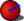

|
| Emplacement du menu |
|---|
| Part Design → Soustraire une primitive → Sphère soustractive |
| Ateliers |
| PartDesign |
| Raccourci par défaut |
| Aucun |
| Voir aussi |
| PartDesign CompPrimitiveSubtractive |
Description
Insérer une sphère primitive soustractive dans le Corps actif. Sa forme est soustraite du solide existant.
Disponible dans la version 0.17
{kind=link}
À gauche, le corps actif (A) en gris et le prisme soustractif (B) en rouge transparent ; le résultat final est à droite.
Comment l'utiliser
- Presser le bouton  Sphère additive. Note: la sphère soustractive fait partie du menu d'icônes appelé Soustraire une primive. Après le lancement de FreeCAD, le cube soustractif est affiché par défaut dans la barre d'outils. Pour obtenir la sphère soustractive, cliquer sur la flèche vers le bas et choisissez Sphère soustractive dans le menu.
- Définir les paramètres primitifs et d'attachement.
- Cliquer sur OK.
- Une sphère apparaît dans le corps actif.
{kind=link}
Options
La Sphère peut être éditée après sa création de deux façons
- Double-cliquer son étiquette dans l'arborescence, ou faire un clic droit sur l'étiquette et sélectionner Éditer la primitive dans le menu contextuel; ceci ouvre les Propriétés de la primitive.
- Via l'éditeur de propriétés.
Propriétés
- DONNÉESAttachement: définit les modes d'attachement ainsi que le décalage d'attachement. Voir Attachement.
- DONNÉESLabel: Donne le nom de la Sphère, changer si nécessaire.
- DONNÉESRadius: Rayon de la sphère.
- DONNÉESAngle1: (nommé V parametre dans Paramètres de la primitive) coupe la sphère dans sa partie inférieure par un cercle parallèle à la section (-90 pour une sphère entière)
- DONNÉESAngle2: (sans nom dans Paramètres de la primitive) modifie la Sphère par la partie supérieure en ellipsoïde (90 pour une sphère entière).
- DONNÉESAngle3: (nommé U parametre dans Paramètres de la primitive) angle de rotation de la section (comme une part de melon)(360° pour une sphère entière).